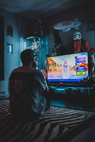
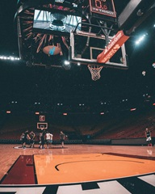

Hobbies
MOVIESI love movies because they allow me to escape into different worlds and experience new stories and emotions. Whether it’s an action-packed adventure, a deep drama, or a thought-provoking film, movies help me relax and see life from different perspectives. Some of my favorite directors are Quentin Tarantino and Guy Ritchie, and my favorite movies are "Pulp Fiction" and "Snatch". Movies are also a great way to spend time alone or with friends, sharing moments and memories through storytelling. |
|
BOOKSI’ve always loved books, starting with Stephen King, whose stories first sparked my passion for reading. My favorites include "Misery" and "The Game of Thrones" series, both of which drew me into rich, immersive worlds full of suspense, complex characters, and unforgettable stories. Reading allows me to escape reality, explore new ideas, and experience adventures I could never have in real life. |
|
MUSICI love music, especially rap, because it combines rhythm, storytelling, and emotion in a way that really speaks to me. I enjoy the clever lyrics, powerful messages, and creative flow that make each track unique. My favorite song is "Katadiki" by Lex and some of my favorite artists are Lex, Notorious B.I.G. and Ethismos. Music inspires me, energizes me, and is always there to match my mood, whether I want to relax, focus, or just feel motivated. |
|
 |
GAMINGI love gaming, especially strategy games, because they challenge me to think critically and plan carefully. I enjoy diving into complex worlds where every decision matters and strategies can lead to victory or defeat. Gaming is not only a fun way to relax but also a way to sharpen my problem-solving skills and enjoy immersive experiences that keep me engaged for hours. |
HISTORYI am fascinated by history because it allows me to understand how the world and societies have developed over time. Learning about past events, cultures, and people helps me make sense of the present and appreciate the lessons of the past. History is like a window into human experiences, full of stories, achievements, and challenges that continue to inspire and teach us today. |
 |
 |
BASKETI enjoy watching basketball because it’s thrilling to see the action unfold on the court. I love following the strategies, impressive plays, and teamwork that make each game exciting. My favorite team is Olympiacos, and I greatly admire players like Michael Jordan and Giannis Antetokounmpo. Watching basketball also inspires me to improve my own skills and gives me a chance to celebrate great moments with other fans. |